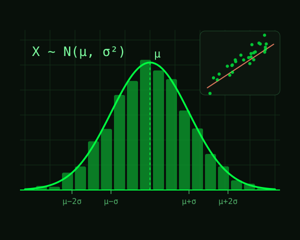

Consegna
Riporta qui il testo dell'esercizio, così com'è stato assegnato.
Dati
Descrivi il dataset: origine, numero di osservazioni, variabili principali.
| Variabile | Tipo | Descrizione |
|---|---|---|
eta | numerica | Età in anni |
sesso | categoriale | M / F |
Svolgimento
Le formule si scrivono in LaTeX. In linea: la media campionaria è $\bar{x} = \frac{1}{n}\sum_{i=1}^{n} x_i$. A blocco:
$$ s^2 = \frac{1}{n-1}\sum_{i=1}^{n}\left(x_i - \bar{x}\right)^2 $$
Codice
dati <- read.csv("dati.csv")
summary(dati$eta)
hist(dati$eta, breaks = 20, col = "#00ff41", main = "Distribuzione dell'età")
figura1.png in questa cartella).Conclusioni
Risultato. Riassumi qui la risposta finale alla domanda dell'homework.